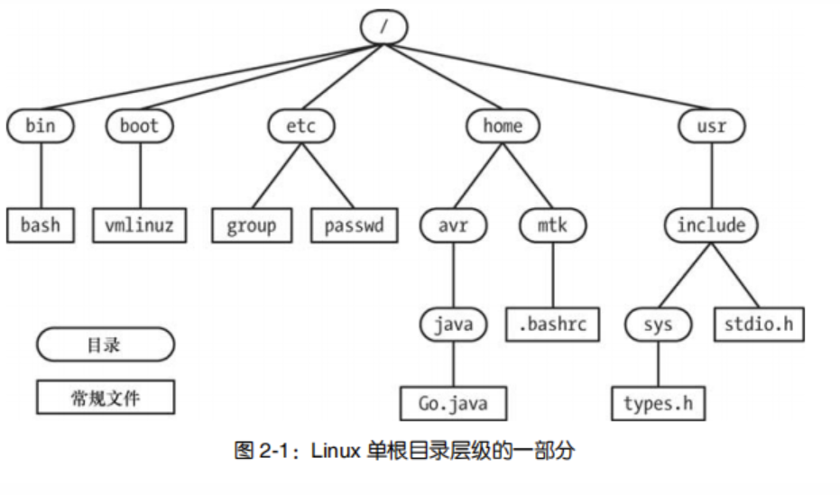

Linux漫游——导论
Linux漫游导论
Linux系统编程之旅
Start
首先就要谈谈内核是什么：
一般的讲，也就是我们在这本书提到的那样的东西——是指管理和分配计算机资源（即CPU、RAM 和设备）的核心层软件。值得一提的是——内核让我们的程序运行更加的简单。
内核的职责，有六个：
- 进程调度：计算机内均配备有一个或多个 CPU（中央处理单元），以执行程序指令。
“多任务”意指多个进程（即运行中的程序）可同时驻留于内存，且每个进程都能获得对 CPU 的使用权。“抢占”则是指一组规则。- 内存管理：内核必须以公平、高效地方式在进程间共享这一资源
- 提供了文件系统：内核在磁盘之上提供有文件系统，允许对文件执行创建、获取、更新以及删除等操作。
- 创建和终止进程：内核可将新程序载入内存，为其提供运行所需的资源（比如，CPU、内存以及对文件的访问等）。这样一个运行中的程序我们称之为“进程”。一旦进程执行完毕，内核还要确保释放其占用资源，以供后续程序重新使用。
- 对设备的访问：计算机外接设备（鼠标、键盘、磁盘和磁带驱动器等）可实现计算机与外部世界的通信，这一通信机制包括输入、输出或是两者兼而有之。内核既为程序访问设备提供了简化版的标准接口，同时还要仲裁多个进程对每一个设备的访问。
- 联网：内核以用户进程的名义收发网络消息（数据包）。该任务包括将网络数据包路由至目标系统。
这就是说，每个用户都可以登录进入系统，独立操作，而与其他用户大致无干。
内核态和用户态
现代CPU允许两个重要的状态即：用户态和核心态（有时也称之为监管态 supervisor mode）。执行硬件指令可使 CPU 在两种状态间来回切换。与之对应，可将虚拟内存区域划分（标记）为用户空间部分或内核空间部分。
以进程及内核视角检视系统
学习内核编程的时候，有必要注意到思维的转化，换而言之，我们需要学习从内核的角度上看待问题
shell
shell 是一种具有特殊用途的程序，主要用于读取用户输入的命令，并执行相应的程序以响应命令。有时，人们也称之为命令解释器。术语登录 shell（login shell）是指用户刚登录系统时，由系统创建，用以运行 shell 的进程。
设计 shell 的目的不仅仅是用于人机交互，对 shell 脚本（包含 shell 命令的文本文件）进行解释也是其用途之一。为实现这一目的，每款 shell 都内置有许多通常与编程语言相关的功能，其中包括变量、循环和条件语句、I/O 命令以及函数等。
用户和组
系统会对每个用户的身份做唯一标识，用户可隶属于多个组。用户系统的每个用户都拥有唯一的登录名（用户名）和与之相对应的整数型用户ID（UID）。每一个用户，都会有对应的记录。这样的记录由下面的三个部分组成
- 组名：（唯一的）组名称。
- 组 ID（GID）：与组相关的整数型 ID。
- 用户列表：隶属于该组的用户登录名列表（通过密码文件记录的 group ID 字段未能标识出的该组其他成员，也在此列），以逗号分隔。
需要注意的是，超级用户的用户ID是0，登录名称是root，在一般的 UNIX 系统上，超级用户凌驾于系统的权限检查之上。因此，无论对文件施以何种访问权限限制，超级用户都可以访问系统中的任何文件，也能发送信号干预系统运行的所有用户进程。
单根目录层级、目录、链接及文件
内核维护着一套单根目录结构，以放置系统的所有文件。完全不同于Windows的是，Linux有一个根目录/，所有的文件和目录都是他的子孙。
文件类型
在文件系统内，会对文件类型进行标记，以表明其种类。其中一种用来表示普通数据文件，人们常称之为“普通文件”或“纯文本文件”，以示与其他种类的文件有所区别。于是，文件在这里就是任何形式的文件的意思了。
路径和链接
目录是一种特殊类型的文件，内容采用表格形式，数据项包括文件名以及对相应文件的引用。这一“文件名+引用”的组合被称为链接。每个文件都可以有多条链接，因而也可以有多个名称，在相同或不同的目录中出现。目录可包含指向文件或其他目录的链接。路径间的链接建立起如图 2-1 所示的目录层级。每个目录至少包含两条记录：.和..，前者是指向目录自身的链接，后者是指向其上级目录—父目录的链接。

符号链接
类似于普通链接，符号链接给文件起了一个“别号（alternative name）”。所谓“另一文件”通常被称为符号链接的目标，人们一般会说符号链接“指向”或“引用”目标文件。在多数情况下，只要系统调用用到了路径名，内核会自动解除（换言之，按照）该路径名中符号链接的引用，以符号链接所指向的文件名来替换符号链接。若符号链接的目标文件自身也是一个符号链接，那么上述过程会以递归方式重复下去。对于那些指向了一个并不存在的文件，可以视之为空连接。
通常，人们会分别使用硬链接（hard link）或软链接（soft link）这样的术语来指代正常链接和符号链接。
文件名
在大多数 Linux 文件系统上，文件名最长可达 255 个字符。文件名可以包含除“/”和空字符（\0）外的所有字符。但是，只建议使用字母、数字、点(“.”)、下划线（“_”）以及连字符（“−”）。SUSv3 将这 65 个字符的集合[-.\ _a-zA-Z0-9]称为可移植文件名字符集（portable filename character set）。
注意的是——为了防止出现特殊字符无法识别的问题，强烈建议避免使用上述可以指字符以外的字符作为文件名称
此外，还应避免以连字符（“-”）作为文件名的起始字符，因为一旦在 shell 命令中使用这种文件名，会被误认为命令行选项开关。
路径名
路径名是由一系列文件名组成的字符串，彼此以“/”分隔，首字符可以为“/”（非强制）1。除却最后一个文件名外，该系列文件名均为目录名称（或为指向目录的符号链接）。路径名的尾部2可标识任意类型的文件，包括目录在内。有时将该字符串中最后一个“/”字符之前的部分称为路径名的目录部分，将其之后的部分称为路径名的文件部分或基础部分。
路径名应按从左至右的顺序阅读，路径名中每个文件名之前的部分，即为该文件所处目录。可在路径名中任意位置后引入字符串“..”，用以指代路径名中当前位置的父目录。路径名描述了单根目录层级下的文件位置，又可分为绝对路径名和相对路径名：
- 绝对路径名以“/”开始，指明文件相对于根目录的位置。图 2-1 中的/home/mtk/. bashrc、/usr/include 以及/（根路径的路径名）都是绝对路径名的例子。
- 相对路径名定义了相对于进程当前工作目录（见下文）的文件位置，与绝对路径名相比，相对路径名缺少了起始的“/”。如图 2-1 所示，在目录 usr 下，可使用相对路径名include/sys/types.h 来引用文件 types.h，在目录 avr 下，可使用相对路径名../mtk/.bashrc来访问文件.bashrc。
当前工作目录
值得注意的是，每一个进程都由当前工作目录的说法！说白了就是你现在所处的文件系统的位置。
文件的所有权和权限
每个文件都有一个与之相关的用户 ID 和组 ID，分别定义文件的属主和属组。系统根据文件的所有权来判定用户对文件的访问权限。
为了访问文件，系统把用户分为 3 类：文件的属主（有时，也称为文件的用户）、与文件组（group）ID 相匹配的属组成员用户以及其他用户。可为以上 3 类用户分别设置 3 种权限（共计 9 种权限位）：只允许查看文件内容的读权限；允许修改文件内容的写权限；允许执行文件的执行权限。这里的文件要么指程序，要么是交由某种解释程序（通常指 shell 的一种，但也有例外）处理的脚本。
文件 I/O 模型
UNIX 系统 I/O 模型最为显著的特性之一是其 I/O 通用性概念。也就是说，同一套系统调用（open()、read()、write()、close()等）所执行的 I/O 操作，可施之于所有文件类型，包括设备文件在内。
就本质而言，内核只提供一种文件类型：字节流序列，在处理磁盘文件、磁盘或磁带设备时，可通过 lseek()系统调用来随机访问。
UNIX 系统没有文件结束符的概念，读取文件时如无数据返回，便会认定抵达文件末尾。
文件描述符
I/O 系统调用使用文件描述符—（往往是数值很小的）非负整数—来指代打开的文件。获取文件描述符的常用手法是调用 open()，在参数中指定 I/O 操作目标文件的路径名。通常，由 shell 启动的进程会继承 3 个已打开的文件描述符：
- 描述符 0 为标准输入，指代为进程提供输入的文件；
- 描述符 1 为标准输出，指代供进程写入输出的文件；
- 描述符 2 为标准错误，指代供进程写入错误消息或异常通告的文件。
在交互式 shell 或程序中，上述三者一般都指向终端。在 stdio 函数库中，这几种描述符分别与文件流 stdin、stdout 和 stderr 相对应。
程序
程序通常以两种面目示人。其一为源码形式，由使用编程语言（比如，C 语言）写成的一系列语句组成，是人类可以阅读的文本文件。要想执行程序，则需将源码转换为第二种形式—计算机可以理解的二进制机器语言指令。
过滤器
从 stdin 读取输入，加以转换，再将转换后的数据输出到 stdout，常常将拥有上述行为的程序称为过滤器，cat、grep、tr、sort、wc、sed、awk 均在其列。
命令行参数
C 语言程序可以访问命令行参数，即程序运行时在命令行中输入的内容。要访问命令行参数，程序的 main()函数需做如下声明：argc 变量包含命令行参数的总个数，argv 指针数组的成员指针则逐一指向每个命令行参数字符串。首个字符串 argv[0]，标识程序名本身。
2.7 进程
简而言之，进程是正在执行的程序实例。也就是说，一个程序被CPU执行的时候就变成了进程，并且，程序代码将会被载入虚拟内存，微程序变量分配空间，建立内核记账（bookkeeping）数据结构，以记录与进程有关的各种信息（比如，进程 ID、用户 ID、组 ID 以及终止状态等）。
内核会为进程分配一些资源，并且在进程的生命周期中为之分配资源。程序终止时，内核会释放所有此类资源，供其他进程重新使用。其他资源（如 CPU、网络带宽等）都属于可再生资源，但必须在所有进程间平等共享。
进程的内存布局逻辑上将一个进程划分为以下几部分（也称为段）。
- 文本：程序的指令。
- 数据：程序使用的静态变量。
- 堆：程序可从该区域动态分配额外内存。
- 栈：随函数调用、返回而增减的一片内存，用于为局部变量和函数调用链接信息分配存储空间。
创建进程和执行程序
进程可使用系统调用 fork()来创建一个新进程。调用 fork()的进程被称为父进程，新创建的进程则被称为子进程。
对父进程的复制来创建子进程。子进程从父进程处继承数据段、栈段以及堆段的副本后，可以修改这些内容，不会影响父进程的“原版”内容。（在内存中被标记为只读的程序文本段则由父、子进程共享。）
以 execve()为基础，C 语言库还提供了几个相关函数，接口虽然略有不同，但功能全都相同。以上所有库函数的名称均以字符串“exec”打头，在函数间差异无关宏旨的场合，本书会用符号exec()作为这些库函数的统称。
进程 ID 和父进程 ID
每一进程都有一个唯一的整数型进程标识符（PID）。此外，每一进程还具有一个父进程标识符（PPID）属性，用以标识请求内核创建自己的进程。
进程终止和终止状态
可使用以下两种方式之一来终止一个进程：
- 其一，进程可使用 _exit()系统调用（或相关的exit()库函数），请求退出；
- 其二，向进程传递信号，将其“杀死”。
无论以何种方式退出，进程都会生成“终止状态”，一个非负小整数，可供父进程的 wait()系统调用检测。在调用 _exit()的情况下，进程会指明自己的终止状态。若由信号来“杀死”进程，则会根据导致进程“死亡”的信号类型来设置进程的终止状态。（有时会将传递进\ _exit()的参数称为进程的“退出状态”，以示与终止状态有所不同，后者要么指传递给 _exit()的参数值，要么表示“杀死”进程的信号。）根据惯例，终止状态为 0 表示进程“功成身退”，非 0 则表示有错误发生。大多数 shell 会将前一执行程序的终止状态保存于 shell 变量$?中。
进程的用户和组标识符（凭证）
每个进程都有一组与之相关的用户 ID (UID)和组 ID (GID)，如下所示。
- 真实用户 ID 和组 ID：用来标识进程所属的用户和组。新进程从其父进程处继承这些 ID。登录 shell 则会从系统密码文件的相应字段中获取其真实用户 ID 和组 ID。
- 有效用户 ID 和组 ID：进程在访问受保护资源（比如，文件和进程间通信对象）时，会使用这两个 ID（并结合下述的补充组 ID）来确定访问权限。一般情况下，进程的有效 ID 与相应的真实 ID 值相同。正如即将讨论的那样，改变进程的有效ID 实为一种机制，可使进程具有其他用户或组的权限。
- 补充组 ID：用来标识进程所属的额外组。新进程从其父进程处继承补充组 ID。登录shell 则从系统组文件中获取其补充组 ID。
特权进程
在 UNIX 系统上，就传统意义而言，特权进程是指有效用户 ID 为 0（超级用户）的进程。通常由内核所施加的权限限制对此类进程无效。与之相反，术语“无特权”（或非特权）进程是指由其他用户运行的进程。此类进程的有效用户 ID 为非 0 值，且必须遵守由内核所强加的权限规则。由某一特权进程创建的进程，也可以是特权进程。例如，一个由 root（超级用户）发起的登录 shell。成为特权进程的另一方法是利用 set-user-ID 机制，该机制允许某进程的有效用户ID 等同于该进程所执行程序文件的用户 ID。
能力（Capabilities）
始于内核 2.2，Linux 把传统上赋予超级用户的权限划分为一组相互独立的单元（称之为“能力”）。每次特权操作都与特定的能力相关，仅当进程具有特定能力时，才能执行相应操作。传统意义上的超级用户进程（有效用户 ID 为 0）则相应开启了所有能力。赋予某进程部分能力，使得其既能够执行某些特权级操作，又防止其执行其他特权级操作。本书第 39 章会对能力做深入讨论。在本书后文中，当述及只能由特权进程执行的特殊操作时，一般都会在括号中标明其具体能力。能力的命名以 CAP_为前缀，例如，CAP_KILL。init 进程系统引导时，内核会创建一个名为 init 的特殊进程，即“所有进程之父”，该进程的相应程序文件为/sbin/init。系统的所有进程不是由 init（使用 fork()）“亲自”创建，就是由其后代进程创建。init 进程的进程号总为 1，且总是以超级用户权限运行。谁（哪怕是超级用户）都不能“杀死”init 进程，只有关闭系统才能终止该进程。init 的主要任务是创建并监控系统运行所需的一系列进程。（手册页 init(8)中包含了 init 进程的详细信息。）
守护进程
守护进程指的是具有特殊用途的进程，系统创建和处理此类进程的方式与其他进程相同，但以下特征是其所独有的：
- “长生不老”。守护进程通常在系统引导时启动，直至系统关闭前，会一直“健在”。
- 守护进程在后台运行，且无控制终端供其读取或写入数据。守护进程中的例子有 syslogd（在系统日志中记录消息）和 httpd（利用 HTTP 分发 Web 页面）。
环境列表
每个进程都有一份环境列表，即在进程用户空间内存中维护的一组环境变量。
由 fork()创建的新进程，会继承父进程的环境副本。这也为父子进程间通信提供了一种机制。当进程调用 exec()替换当前正在运行的程序时，新程序要么继承老程序的环境，要么在 exec()调用的参数中指定新环境并加以接收。
我们可以自己创建环境变量
export MYVAR = "Hello, World" C 语言程序可使用外部变量（char **environ）来访问环境，而库函数也允许进程去获取或修改自己环境中的值。
环境变量的用途多种多样。例如，shell 定义并使用了一系列变量，供 shell 执行的脚本和程序访问。其中包括：
- 变量 HOME（明确定义了用户登录目录的路径名）、
- 变量 PATH（指明了用户输入命令后，shell 查找与之相应程序时所搜索的目录列表）。
资源限制
每个进程都会消耗诸如打开文件、内存以及 CPU 时间之类的资源。使用系统调用 setrlimit()，进程可为自己消耗的各类资源设定一个上限。
这样的限制分为软限制和硬限制。
软限制（soft limit）限制了进程可以消耗的资源总量，硬限制（hard limit）软限制的调整上限。非特权进程在针对特定资源调整软限制值时，可将其设置为 0 到相应硬限制值之间的任意值，但硬限制值则只能调低，不能调高。由 fork()创建的新进程，会继承其父进程对资源限制的设置。使用 ulimit 命令（在 C shell 中为 limit）可调整 shell 的资源限制。shell 为执行命令所创建的子进程会继承上述资源设置。
内存映射
调用系统函数 mmap()的进程，会在其虚拟地址空间中创建一个新的内存映射。映射分为两类。
- 文件映射：将文件的部分区域映射入调用进程的虚拟内存。映射一旦完成，对文件映射内容的访问则转化为对相应内存区域的字节操作。映射页面会按需自动从文件中加载。
- 相映成趣的是并无文件与之相对应的匿名映射，其映射页面的内容会被初始化为 0。
由某一进程所映射的内存可以与其他进程的映射共享。达成共享的方式有二：
- 其一是两个进程都针对某一文件的相同部分加以映射，
- 其二是由 fork()创建的子进程自父进程处继承映射。
当两个或多个进程共享的页面相同时，进程之一对页面内容的改动是否为其他进程所见呢？这取决于创建映射时所传入的标志参数。若传入标志为私有，则某进程对映射内容的修改对于其他进程是不可见的，而且这些改动也不会真地落实到文件上；若传入标志为共享，对映射内容的修改就会为其他进程所见，并且这些修改也会造成对文件的改动。内存映射用途很多，其中包括：以可执行文件的相应段来初始化进程的文本段、内存（内容填充为 0）分配、文件 I/O（即映射内存 I/O）以及进程间通信（通过共享映射）。
2.10 进程间通信及同步
Linux 系统上运行有多个进程，其中许多都是独立运行。然而，有些进程必须相互合作以达成预期目的，因此彼此间需要通信和同步机制。
读写磁盘文件中的信息是进程间通信的方法之一。可是，对许多程序来说，这种方法既慢又缺乏灵活性。因此，像所有现代 UNIX 实现那样，Linux 也提供了丰富的进程间通信（IPC）机制，如下所示。
- 信号（signal），用来表示事件的发生。
- 管道（亦即 shell 用户所熟悉的“|”操作符）和 FIFO，用于在进程间传递数据。
- 套接字，供同一台主机或是联网的不同主机上所运行的进程之间传递数据。
- 文件锁定，为防止其他进程读取或更新文件内容，允许某进程对文件的部分区域加以锁定。
- 消息队列，用于在进程间交换消息（数据包）。
- 信号量（semaphore），用来同步进程动作。
- 共享内存，允许两个及两个以上进程共享一块内存。当某进程改变了共享内存的内容时，其他所有进程会立即了解到这一变化。
UNIX 系统的 IPC 机制种类如此繁多，有些功能还互有重叠，部分原因是由于各种 IPC 机制是在不同的 UNIX 实现上演变而来的，需要遵循的标准也各不相同。例如，就本质而言，FIFO和 UNIX 套接字功能相同，允许同一系统上并无关联的进程彼此交换数据。二者之所以并存于现代 UNIX 系统之中，是由于 FIFO 来自 System V，而套接字则源于 BSD。
2.11 信号
尽管上一节将信号视为 IPC 的方法之一，但其在其他方面的广泛应用则更为普遍，因此值得深入讨论。
人们往往将信号称为“软件中断”。进程收到信号，就意味着某一事件或异常情况的发生。信号的类型很多，每一种分别标识不同的事件或情况。采用不同的整数来标识各种信号类型，并以 SIGxxxx 形式的符号名加以定义。
内核、其他进程（只要具有相应的权限）或进程自身均可向进程发送信号。例如，发生下列情况之一时，内核可向进程发送信号。
- 用户键入中断字符（通常为 Control-C）。
- 进程的子进程之一已经终止。
- 由进程设定的定时器（告警时钟）已经到期。
- 进程尝试访问无效的内存地址。
在 shell 中，可使用 kill 命令向进程发送信号。在程序内部，系统调用 kill()可提供相同的功能。
收到信号时，进程会根据信号采取如下动作之一。
- 忽略信号。
- 被信号“杀死”。
- 先挂起，之后再被专用信号唤醒。
就大多数信号类型而言，程序可选择不采取默认的信号动作，而是忽略信号（当信号的默认处理行为并非忽略此信号时，会派上用场）或者建立自己的信号处理器。信号处理器是由程序员定义的函数，会在进程收到信号时自动调用，根据信号的产生条件执行相应动作。（换而言之，可以自己自定义处理信号）
信号从产生直至送达进程期间，一直处于挂起状态。通常，系统会在接收进程下次获得调度时，将处于挂起状态的信号同时送达。如果接收进程正在运行，则会立即将信号送达。然而，程序可以将信号纳入所谓“信号屏蔽”1以求阻塞该信号。如果产生的信号处于“信号屏蔽”之列，那么此信号将一直保持挂起状态，直至解除对该信号的阻塞。（亦即从信号屏蔽中移除。）
2.12 线程
在现代 UNIX 实现中，每个进程都可执行多个线程。可将线程想象为共享同一虚拟内存及一干其他属性的进程。每个线程都会执行相同的程序代码，共享同一数据区域和堆。可是，每个线程都拥有属于自己的栈，用来装载本地变量和函数调用链接信息。线程之间可通过共享的全局变量进行通信。借助于线程 API 所提供的条件变量和互斥机制，进程所属的线程之间得以相互通信并同步行为—尤其是在对共享变量的使用方面。此外，利用 2.10 节所述的 IPC 和同步机制，线程间也能彼此通信。线程的主要优点在于协同线程之间的数据共享（通过全局变量）更为容易，而且就某些算法而论，以多线程来实现比之以多进程实现要更加自然。再者，显而易见，多线程应用能从多处理器硬件的并行处理中获益匪浅。
2.13 进程组和 shell 任务控制
shell 执行的每个程序都会在一个新进程内发起。比如，shell 创建了 3 个进程来执行以下管道命令（在当前的工作目录下，根据文件大小对文件进行排序并显示）：
ls -l | sort -k5n | less 除 Bourne shell 以外，几乎所有的主流 shell 都提供了一种交互式特性，名为任务控制。该特性允许用户同时执行并操纵多条命令或管道。在支持任务控制的 shell 中，会将管道内的所有进程置于一个新进程组或任务中。（如果情况很简单，shell 命令行只包含一条命令，那么就会创建一个只包含单个进程的新进程组。）进程组中的每个进程都具有相同的进程组标识符（以整数形式），其实就是进程组中某个进程（也称为进程组组长 process group leader）的进程 ID。内核可对进程组中的所有成员执行各种动作，尤其是信号的传递。如下节所述，支持任务控制的 shell 会利用这一特性，以挂起或恢复执行管道中的所有进程。
2.14 会话、控制终端和控制进程
会话指的是一组进程组（任务）。会话中的所有进程都具有相同的会话标识符。会话首进程（session leader）是指创建会话的进程，其进程 ID 会成为会话 ID。
使用会话最多的是支持任务控制的 shell，由 shell 创建的所有进程组与 shell 自身隶属于同一会话，shell 是此会话的会话首进程。
通常，会话都会与某个控制终端相关。控制终端建立于会话首进程初次打开终端设备之时。对于由交互式 shell 所创建的会话，这恰恰是用户的登录终端。一个终端至多只能成为一个会话的控制终端。
打开控制终端会致使会话首进程成为终端的控制进程。一旦断开了与终端的连接（比如，关闭了终端窗口），控制进程将会收到 SIGHUP 信号。
在任一时点，会话中总有一个前台进程组（前台任务），可以从终端中读取输入，向终端发送输出。如果用户在控制终端中输入了“中断”（通常是 Control-C）或“挂起”字符（通常是 Control-Z），那么终端驱动程序会发送信号以终止或挂起（亦即停止）前台进程组。一个会话可以拥有任意数量的后台进程组（后台任务），由以“&”字符结尾的行命令来创建。支持任务控制的 shell 提供如下命令：列出所有任务，向任务发送信号，以及在前后台任务之间来回切换。
2.15 伪终端
伪终端是一对相互连接的虚拟设备，也称为主从设备。在这对设备之间，设有一条 IPC信道，可供数据进行双向传递。从设备（slave device）所提供的接口，其行为方式与终端相类似，基于这一特点，可以将某个为终端编写的程序与从设备连接起来，然后，再利用连接到主设备的另一程序来驱动这一“面向终端”的程序，这是伪终端的一个关键用途。由“驱动程序”1所产生的输出，在经由终端驱动程序的常规输入处理（例如，默认情况下，会把回车符映射为换行符）后，会作为输入传递给与从设备相连的面向终端的程序。而由面向终端的程序向从设备写入的任何数据又作为“驱动程序”的输入来传递（在执行完所有常规的终端输入处理后）。换句话说，“驱动程序”所履行的功能，在效果上等同于用户通常在传统终端上所执行的操作。伪终端广泛应用于各种应用领域，最知名的要数 telnet 和 ssh 之类提供网络登录服务的应用，以及 X Window 系统所提供的终端窗口实现。
2.16 日期和时间
进程涉及两种类型的时间。
- 真实时间：指的是在进程的生命期内（所经历的时间或时钟时间），以某个标准时间点（日历时间）或固定时间点（通常是进程的启动时间）为起点测量得出的时间。在UNIX 系统上，日历时间是以国际协调时间（简称 UTC）1970 年 1 月 1 日凌晨为起始点，按秒测量得出的时间，再进行时区调整（定义时区的基准点为穿过英格兰格林威治的经线) 。这一日期与 UNIX 系统的生日很接近，也被称为纪元（Epoch）。
- 进程时间：亦称为 CPU 时间，指的是进程自启动起来，所占用的 CPU 时间总量。可进一步将 CPU 时间划分为系统 CPU 时间和用户 CPU 时间。前者是指在内核模式中，执行代码所花费的时间（比如，执行系统调用，或代表进程执行其他的内核服务）。后者是指在用户模式中，执行代码所花费的时间（比如，执行常规的程序代码）。
time 命令会显示出真实时间、系统 CPU 时间，以及为执行管道中的多个进程而花费的用户 CPU 时间。
2.17 客户端/服务器架构
本书有多处论及客户端/服务器应用程序的设计和实现。客户端/服务器应用由两个组件进程组成。
- 客户端：向服务器发送请求消息，请求服务器执行某些服务。
- 服务器：分析客户端的请求，执行相应的动作，然后，向客户端回发响应消息。
有时，服务器与客户端之间可能需要就一次服务而进行多次交互。客户端应用通常与用户打交道，而服务器应用则提供对某些共享资源的访问。一般说来，都是众多客户端进程与为数不多的一个或几个服务器端进程进行通信。客户端和服务器既可以驻留于同一台计算机上，也可以位于联网的不同计算机上。客户端和服务器使用 2.10 节所讨论的 IPC 机制来实现彼此通信。服务器可以提供各种服务，如下所示。
- 提供对数据库或其他共享信息资源的访问。
- 提供对远程文件的跨网访问。
- 对某些商业逻辑进行封装。
- 提供对共享硬件资源的访问（比如，打印机）。
- 提供 WWW 服务。
将某项服务封装于单独的服务器应用中，这一做法原因很多，举例如下。
- 效率：较之于在本地的每台计算上提供相同资源，在服务器应用管理之下提供资源的一份实例，则要节约许多。
- 控制、协调和安全：由于资源（尤其是信息资源）的统一存放，服务器既可以协调对资源的访问（例如，两个客户端不能同时更新同一信息），还可以保护资源安全，令其只对特定客户端开放。
- 在异构环境中运行：在网络中，客户端和服务器应用所运行的硬件平台和操作系统可以不同。
2.18 实时性
实时性应用程序是指那些需要对输入做出及时响应的程序。此类输入往往来自于外接的传感器或某些专门的输入设备，而输出则会去控制外接硬件。具有实时性需求的应用程序示例包括自动化装配流水线、银行 ATM 机，以及飞机导航系统等。
虽然许多实时性应用程序都要求对输入做出快速响应，但决定性因素却在于要在事件触发后的一定时限内，保证响应的交付。要提供实时响应，特别是在短时间内加以响应，就需要底层操作系统的支持。由于实时响应的需求与多用户分时操作系统的需求存在冲突，大多数操作系统“天生”并不提供这样的支持。虽然已经设计出不少实时性的 UNIX 变体，但传统的 UNIX 实现都不是实时操作系统。Linux 的实时性变体也早已诞生，而近期的 Linux 内核正转向对实时性应用原生而全面的支持。
为支持实时性应用，POSIX.1b 定义了多个 POSIX.1 扩展，其中包括异步 I/O、共享内存、内存映射文件、内存锁定、实时性时钟和定时器、备选调度策略、实时性信号、消息队列，以及信号量等。虽然这些扩展还不具备严格意义上的“实时性”，但当今的大多数 UNIX 实现都支持上面提到的全部或部分扩展（本书将讲解 Linux 所支持的 POSIX.1b 特性）。本书会以术语“真实时间（real time）”来指代日历时间或经历时间的概念，而术语“实时性（realtime）”则是指操作系统或应用程序具备本节所述的响应能力。
2.19 /proc
文件系统类似于其他的几种 UNIX 实现，Linux 也提供了/proc 文件系统，由一组目录和文件组成，装配（mount）于/proc 目录下。/proc 文件系统是一种虚拟文件系统，以文件系统目录和文件形式，提供一个指向内核数据结构的接口。这为查看和改变各种系统属性开启了方便之门。此外，还能通过一组以/ proc/PID 形式命名的目录（PID 即进程 ID）查看系统中运行各进程的相关信息。通常，/proc 目录下的文件内容都采取人类可读的文本形式，shell 脚本也能对其进行解析。程序可以打开、读取和写入/proc 目录下的既定文件。大多数情况下，只有特权级进程才能修改/proc 目录下的文件内容。本书在讲解各种 Linux 编程接口的同时，也会对相关的/proc 文件进行介绍。12.1 节将就该文件系统的总体信息做进一步介绍。尚无任何标准对/proc 文件系统进行过规范，书中与该文件系统相关的细节均为 Linux 专有。2.20 总结本章纵览了一系列与 Linux 系统编程相关的基本概念。对于 Linux 或 UNIX“生手”而言，理解这些基本概念将为学习系统编程提供足够的背景知识。
扩展
环境列表
更加详细的：Linux环境变量配置全攻略 - 悠悠i - 博客园 (cnblogs.com)
Linux环境变量分类
一、按照生命周期来分，Linux环境变量可以分为两类：
1、永久的：需要用户修改相关的配置文件，变量永久生效。
2、临时的：用户利用export命令，在当前终端下声明环境变量，关闭Shell终端失效。
二、按照作用域来分，Linux环境变量可以分为：
1、系统环境变量：系统环境变量对该系统中所有用户都有效。
2、用户环境变量：顾名思义，这种类型的环境变量只对特定的用户有效。
Linux设置环境变量的方法
一、在/etc/profile文件中添加变量 对所有用户生效（永久的）
用vim在文件/etc/profile文件中增加变量，该变量将会对Linux下所有用户有效，并且是“永久的”。
例如：编辑/etc/profile文件，添加CLASSPATH变量
vim /etc/profile
export CLASSPATH=./JAVA_HOME/lib;$JAVA_HOME/jre/lib注：修改文件后要想马上生效还要运行source /etc/profile不然只能在下次重进此用户时生效。
二、在用户目录下的.bash_profile文件中增加变量 【对单一用户生效（永久的）】
用vim ~/.bash_profile文件中增加变量，改变量仅会对当前用户有效，并且是“永久的”。
vim ~/.bash.profile
export CLASSPATH=./JAVA_HOME/lib;$JAVA_HOME/jre/lib注：修改文件后要想马上生效还要运行$ source ~/.bash_profile不然只能在下次重进此用户时生效。
三、直接运行export命令定义变量 【只对当前shell（BASH）有效（临时的）】
在shell的命令行下直接使用export 变量名=变量值
定义变量，该变量只在当前的shell（BASH）或其子shell（BASH）下是有效的，shell关闭了，变量也就失效了，再打开新shell时就没有这个变量，需要使用的话还需要重新定义。
Linux环境变量使用
一、Linux中常见的环境变量有：
- PATH：指定命令的搜索路径
PATH声明用法：
PATH=$PAHT:: : :————:< PATH n >
export PATH
你可以自己加上指定的路径，中间用冒号隔开。环境变量更改后，在用户下次登陆时生效。
可以利用echo $PATH查看当前当前系统PATH路径。
- HOME：指定用户的主工作目录（即用户登陆到Linux系统中时，默认的目录）。
- HISTSIZE：指保存历史命令记录的条数。
- LOGNAME：指当前用户的登录名。
- HOSTNAME：指主机的名称，许多应用程序如果要用到主机名的话，通常是从这个环境变量中来取得的
- SHELL：指当前用户用的是哪种Shell。
- LANG/LANGUGE：和语言相关的环境变量，使用多种语言的用户可以修改此环境变量。
- MAIL：指当前用户的邮件存放目录。
【修改Linux环境变量的方法】
这里:arrow_right:Linux环境变量配置全攻略 - 悠悠i - 博客园 (cnblogs.com)
在自定义安装软件的时候，经常需要配置环境变量，下面列举出各种对环境变量的配置方法。
下面所有例子的环境说明如下：
- 系统：Ubuntu 14.0
- 用户名：uusama
- 需要配置MySQL环境变量路径：/home/uusama/mysql/bin
Linux读取环境变量
读取环境变量的方法：
export命令显示当前系统定义的所有环境变量echo $PATH命令输出当前的PATH环境变量的值
这两个命令执行的效果如下
uusama@ubuntu:~$ export
declare -x HOME="/home/uusama"
declare -x LANG="en_US.UTF-8"
declare -x LANGUAGE="en_US:"
declare -x LESSCLOSE="/usr/bin/lesspipe %s %s"
declare -x LESSOPEN="| /usr/bin/lesspipe %s"
declare -x LOGNAME="uusama"
declare -x MAIL="/var/mail/uusama"
declare -x PATH="/home/uusama/bin:/home/uusama/.local/bin:/usr/local/sbin:/usr/local/bin:/usr/sbin:/usr/bin:/sbin:/bin"
declare -x SSH_TTY="/dev/pts/0"
declare -x TERM="xterm"
declare -x USER="uusama"
uusama@ubuntu:~$ echo $PATH
/home/uusama/bin:/home/uusama/.local/bin:/usr/local/sbin:/usr/local/bin:/usr/sbin:/usr/bin:/sbin:/bin其中PATH变量定义了运行命令的查找路径，以冒号:分割不同的路径，使用export定义的时候可加双引号也可不加。
Linux环境变量配置方法一：export PATH
使用export命令直接修改PATH的值，配置MySQL进入环境变量的方法:
export PATH=/home/uusama/mysql/bin:$PATH
# 或者把PATH放在前面
export PATH=$PATH:/home/uusama/mysql/bin注意事项：
- 生效时间：立即生效
- 生效期限：当前终端有效，窗口关闭后无效
- 生效范围：仅对当前用户有效
- 配置的环境变量中不要忘了加上原来的配置，即
$PATH部分，避免覆盖原来配置
Linux环境变量配置方法二：vim ~/.bashrc
通过修改用户目录下的~/.bashrc文件进行配置：
vim ~/.bashrc
# 在最后一行加上
export PATH=$PATH:/home/uusama/mysql/bin注意事项：
- 生效时间：使用相同的用户打开新的终端时生效，或者手动
source ~/.bashrc生效 - 生效期限：永久有效
- 生效范围：仅对当前用户有效
- 如果有后续的环境变量加载文件覆盖了
PATH定义，则可能不生效
Linux环境变量配置方法三：vim ~/.bash_profile
和修改~/.bashrc文件类似，也是要在文件最后加上新的路径即可：
vim ~/.bash_profile
# 在最后一行加上
export PATH=$PATH:/home/uusama/mysql/bin注意事项：
- 生效时间：使用相同的用户打开新的终端时生效，或者手动
source ~/.bash_profile生效 - 生效期限：永久有效
- 生效范围：仅对当前用户有效
- 如果没有
~/.bash_profile文件，则可以编辑~/.profile文件或者新建一个
Linux环境变量配置方法四：vim /etc/bashrc
该方法是修改系统配置，需要管理员权限（如root）或者对该文件的写入权限：
# 如果/etc/bashrc文件不可编辑，需要修改为可编辑
chmod -v u+w /etc/bashrc
vim /etc/bashrc
# 在最后一行加上
export PATH=$PATH:/home/uusama/mysql/bin注意事项：
- 生效时间：新开终端生效，或者手动
source /etc/bashrc生效 - 生效期限：永久有效
- 生效范围：对所有用户有效
Linux环境变量配置方法五：vim /etc/profile
该方法修改系统配置，需要管理员权限或者对该文件的写入权限，和vim /etc/bashrc类似：
# 如果/etc/profile文件不可编辑，需要修改为可编辑
chmod -v u+w /etc/profile
vim /etc/profile
# 在最后一行加上
export PATH=$PATH:/home/uusama/mysql/bin注意事项：
- 生效时间：新开终端生效，或者手动
source /etc/profile生效 - 生效期限：永久有效
- 生效范围：对所有用户有效
Linux环境变量配置方法六：vim /etc/environment
该方法是修改系统环境配置文件，需要管理员权限或者对该文件的写入权限：
# 如果/etc/bashrc文件不可编辑，需要修改为可编辑
chmod -v u+w /etc/environment
vim /etc/profile
# 在最后一行加上
export PATH=$PATH:/home/uusama/mysql/bin注意事项：
- 生效时间：新开终端生效，或者手动
source /etc/environment生效 - 生效期限：永久有效
- 生效范围：对所有用户有效
上面列出了环境变量的各种配置方法，那么Linux是如何加载这些配置的呢？是以什么样的顺序加载的呢？
特定的加载顺序会导致相同名称的环境变量定义被覆盖或者不生效。
环境变量的分类
环境变量可以简单的分成用户自定义的环境变量以及系统级别的环境变量。
- 用户级别环境变量定义文件：
~/.bashrc、~/.profile（部分系统为：~/.bash_profile） - 系统级别环境变量定义文件：
/etc/bashrc、/etc/profile(部分系统为：/etc/bash_profile）、/etc/environment
另外在用户环境变量中，系统会首先读取~/.bash_profile（或者~/.profile）文件，如果没有该文件则读取~/.bash_login，根据这些文件中内容再去读取~/.bashrc。
测试Linux环境变量加载顺序的方法
为了测试各个不同文件的环境变量加载顺序，我们在每个环境变量定义文件中的第一行都定义相同的环境变量UU_ORDER，该变量的值为本身的值连接上当前文件名称。
需要修改的文件如下：
/etc/environment/etc/profile/etc/profile.d/test.sh，新建文件，没有文件夹可略过/etc/bashrc，或者/etc/bash.bashrc~/.bash_profile，或者~/.profile~/.bashrc
在每个文件中的第一行都加上下面这句代码，并相应的把冒号后的内容修改为当前文件的绝对文件名。
export UU_ORDER="$UU_ORDER:~/.bash_profile"修改完之后保存，新开一个窗口，然后echo $UU_ORDER观察变量的值：
uusama@ubuntu:~$ echo $UU_ORDER
$UU_ORDER:/etc/environment:/etc/profile:/etc/bash.bashrc:/etc/profile.d/test.sh:~/.profile:~/.bashrc可以推测出Linux加载环境变量的顺序如下：
/etc/environment/etc/profile/etc/bash.bashrc/etc/profile.d/test.sh~/.profile~/.bashrc
Linux环境变量文件加载详解
由上面的测试可容易得出Linux加载环境变量的顺序如下，：
系统环境变量 -> 用户自定义环境变量/etc/environment -> /etc/profile -> ~/.profile
打开/etc/profile文件你会发现，该文件的代码中会加载/etc/bash.bashrc文件，然后检查/etc/profile.d/目录下的.sh文件并加载。
# /etc/profile: system-wide .profile file for the Bourne shell (sh(1))
# and Bourne compatible shells (bash(1), ksh(1), ash(1), ...).
if [ "$PS1" ]; then
if [ "$BASH" ] && [ "$BASH" != "/bin/sh" ]; then
# The file bash.bashrc already sets the default PS1.
# PS1='\h:\w\$ '
if [ -f /etc/bash.bashrc ]; then
. /etc/bash.bashrc
fi
else
if [ "`id -u`" -eq 0 ]; then
PS1='# '
else
PS1='$ '
fi
fi
fi
if [ -d /etc/profile.d ]; then
for i in /etc/profile.d/*.sh; do
if [ -r $i ]; then
. $i
fi
done
unset i
fi其次再打开~/.profile文件，会发现该文件中加载了~/.bashrc文件。
# if running bash
if [ -n "$BASH_VERSION" ]; then
# include .bashrc if it exists
if [ -f "$HOME/.bashrc" ]; then
. "$HOME/.bashrc"
fi
fi
# set PATH so it includes user's private bin directories
PATH="$HOME/bin:$HOME/.local/bin:$PATH"从~/.profile文件中代码不难发现，/.profile文件只在用户登录的时候读取一次，而/.bashrc会在每次运行Shell脚本的时候读取一次。
一些小技巧
可以自定义一个环境变量文件，比如在某个项目下定义uusama.profile，在这个文件中使用export定义一系列变量，然后在~/.profile文件后面加上：sourc uusama.profile，这样你每次登陆都可以在Shell脚本中使用自己定义的一系列变量。
也可以使用alias命令定义一些命令的别名，比如alias rm="rm -i"（双引号必须），并把这个代码加入到~/.profile中，这样你每次使用rm命令的时候，都相当于使用rm -i命令，非常方便。
Linux下静态库和动态库的区别
这里：:arrow_right:Linux静态库与共享库基础笔记 - 知乎 (zhihu.com)
1、目标库
编译程序的一种简单方式是简单地将每一个源文件编译成目标文件，然后将这些目标链接在一起组成可执行程序：
gcc -g prog.c mod1.c mod2.c mod3.c
gcc -g prog_nolib prog.o mod1.o mod2.o mod3.o链接实际上是用链接器 ld 来完成的，使用 gcc 命令链接一个程序时，编译器会再幕后调用 ld。
为了解决共享的问题，可以将一组目标文件组织成一个对象库，对象库分为两种：
- 静态库
- 共享库，比静态库更具优势
2、静态库
静态库也称为归档文件，有点：
- 可以将一组经常被调用到的目标文件组织成单个库文件，这样避免构建多个程序时反复编译原来代码的问题
- 链接命令变得更加简单，链接时只需要指定静态库的名称即可，不需要列出一个个目标文件
2.1、创建和维护静态库
使用 ar 命令能够创建和维护静态库，静态库的名称一般为 libname.a：
ar options archive object-filr...options参数由一系列的字母构成，其中一个是操作码，其他是可能影响操作的执行修饰符：r： 替换，将一个目标文件插入到归档文件中并取代同名的目标文件t：目录表，显示归档中的目录表，默认情况下只会列出归档文件中目标文件的名称，添加v修饰之后可以看到记录在归档文件中的各个目标文件的其他特性d： 从归档文件中删除一个模块
2.2、使用静态库
程序和静态库链接起来存在的两种方式：
- 在连接命令中指定静态库的名称
gcc -g -c prog.c
gcc -g -o prog prog.o libdemo.a- 或者将静态库放在链接器搜索的其中一个标准目录中 ，例如
/usr/lib，然后使用-l选项指定库名，库名需要去除lib前缀和.a后缀：
gcc -g -o prog prog.o -ldemo- 如果库不在链接器的搜索目录中，则需要使用
-L指定额外的目录：
gcc -g -o prog prog.o -Llibdir -ldemo3、共享库概述
多个程序使用同一个静态库时，每个程序都有自己的目标模块的副本，这种代码冗余存在的缺点：
- 存储同一个目标模块的多个副本会浪费磁盘空间，并且所浪费的空间是比较大的
- 如果使用了同一模块的程序在同一时刻执行，每个程序都有自己独立的虚拟地址空间，其中保存了一份目标代码副本，这将会提供系统中虚拟内存的整体使用量
- 如果需要修改一个静态库的一个目标模块，那么所有使用这个模块的可执行程序都必须重新进行链接合并这个变更
共享库就是为了克服静态库的诸多缺点，它还具有的优势有：
- 由于整个程序的大小变得更小了，一些情况下，程序可以完全被加载到内存中，从而能够更快的启动程序，这一点只有在大型共享库正被其他程序使用时才成立，第一个加载共享库的程序实际上会在启动时花费更长的时间，因为必须要先找到共享库并将其加载到内存中
- 目标模块修改是 ，不需要重新编译程序就可以看到变更，甚至当运行着的程序正在使用共享库的现有版本时也能够进行这样的变更
共享库的额外开销：
- 创建共享库和构建使用共享库的程序比静态库更复杂
- 共享库在编译时需要使用位置独立代码，这在大多数架构上会带来性能开销，因为它需要使用一个额外的寄存器
- 在运行时必须要执行符号重定位，符号重定位期间，需要对共享库中的每个符号(变量或函数)的引用修改成符合在虚拟内存中的实际运行时位置，这个重定位的过程需要花费一定的时间
虽然共享库的代码是多个进程共享的，但是其中的变量不是，每个使用库的进程会拥有自己的在库中定义的全局和静态变量的副本。
3.1、创建和使用共享库
创建一个共享库
gcc -g -c -fPIC -Wall mod1.c mod2.c mod3.c
gcc -g -shared libfoo.so mod1.o mod2.o mod3.o- 贡献库的命名方式一般为
libname.so - 可以向之前构建的共享库中添加单个目标模块，也可以从中删除单个目标模块
- 也可以将编译共享库的命令放在一行：
gcc -g -fPIC -Wall mod1.c mod2.c mod3.c -shared -o libfoo.so位置独立的代码
-fPIC 选项指定编译器应该生成位置无关代码，这会改变编译器生成执行文件特定操作的代码方式，包括访问全局、静态和外部变量，访问字符串常量，以及获取函数的地址，这些改变使得代码可以在运行时放在任意虚拟地址处，这一点对于共享库来说是必须的，因为链接的时候是无法知道共享库代码位于内存何处。
在 linux/x86-32 上，可以使用不加 -fPIC 选项编译的模块来创建共享库，为了确定一个既有目标文件在编译时是否使用了 -fPIC 选项，可以使用检查目标文件符号表中是否存在 _GLOBAL_OFFSET_TABLE：
nm mod1.o | grep _GLOBAL_OFFSET_TABLE
readelf -s mod1.o | grep _GLOBAL_OFFSET_TABLE下面的命令中如果产生了输出，则说明指定的共享库中至少存在一个目标模块在编译时没有指定 -fPIC：
objdump --all-headers libfoo.so | grep TEXTREL
objdump --all-headers libfoo.so | grep TEXTRELTEXTREL 表示存在一个目标模块，其文本段中包含需要运行时重定位的引用。
使用一个共享库
为了使用共享库需要做两件事情，而使用静态库则无需完成这两件事情：
- 可执行文件中不包含它所需要的目标文件的副本，因此需要通过某种机制找到运行时所需要的共享库：链接阶段将共享库名称嵌入可执行文件中，一个程序所依赖的所有共享库列表称为程序的动态依赖表
- 在程序运行时需要某种机制解析嵌入的库名，即找出与在可执行文件中指定的名称对应的共享库文件，如果库不再内存中的话就将库加载进内存
运行时解析内嵌库名的工作由动态链接器(也称为动态链接加载器或运行时加载器)来完成，动态链接器本身也是一个共享库，其名称为 lib/ld-linux.so.2，所有使用共享库的 ELF 可执行文件都会用到这个共享库。
lib/ld-linux.so.2 通常是指向动态链接器可执行文件的符号链接，这个文件的名称为 ld-version.so。
动态链接器会检查程序所需的共享库清单并使用一组预先定义好的规则来在文件系统上找出相关的库文件。其中一些规则指定了一组存放共享库的标准目录，如 /lib，/usr/lib。
LD_LIBRARY_PATH 环境变量
通知动态链接器一个共享库位于一个非标准目录中的一种方法是将该目录添加到 LD_LIBRARY_PATH 环境变量中以分号分隔的目录列表中，如果定义了 LD_LIBRARY_PATH，那么动态链接器在查找标准库目录前会先查找该环境变量列出的目录中的共享库。
LD_LIBRARY_PATH=. ./prog # 告知动态链接器在当前工作目录中搜索共享库静态链接和动态链接的比较
术语链接通常指的是使用链接器 ld 将一个或多个编译过的目标文件合成一个可执行程序，也称为静态链接。
在运行时使用共享库的可执行程序需要经历额外的动态链接阶段。
3.2、共享库 soname
嵌入到可执行程序以及动态链接器在运行时搜索的名称除了使用真实名称，还经常使用别名来创建共享库，这种别名称为 soname，ELF 中的 DT_SONAME 标签。
如果共享库拥有一个 soname，那么在静态链接阶段会将 soname 嵌入到可执行文件中，而不会使用真实名称，同时后面的动态链接器在运行时也会使用这个 soname 来搜索库，引入 soname 的目的是为了提供一个间接层，使得可执行程序能够在运行时使用与链接时使用不同的但兼容的共享库。
gcc -g -c -fPIC -Wall mod1.c mod2.c mod3.c
gcc -g -shared -Wl,-soname,libbar.so -o libfoo.so mod1.o mod2.o mod3.o-Wl,-soname,libbar.so等选项都是传给链接器的指令，以将共享库libfoo.so的soname设置为libbar.so
使用一下命令中的任意一个，可以确定既有共享库的 soname：
objdump -p libz.so | grep SONAME
SONAME libz.so.1
readelf -d libz.so | grep SONAME
0x000000000000000e (SONAME) Library soname: [libz.so.1]使用 soname 创建程序：
gcc -g -Wall -o prog prog.c libfoo.so链接器检查到库 libfoo.so 包含了 soname ： libbar.so，就将这个 soname 嵌入到可执行文件中。
使用共享库时必须要创建一个符号链接，将 soname 指向库的真实名称，并且必须要将这个符号链接放在动态链接器搜索的其中一个目录中。

程序载入内存以设备执行时发生的事情：

要找出一个进程当前使用的共享库则可以列出相应的 Linux 特有的 /proc/PID/maps 文件中的内容。
4、使用共享库的有用工具
ldd
ldd ： 列出动态依赖，显示一个程序运行时所需要的共享库。
ldd 会解析出每个库引用，使用的搜索方式与动态链接器一样，并以下面的形式显示结果：
library-name => resolves-to-path对于多数的 ELF 文件，ldd 至少会列出与 ld-linux.so.2、动态链接器以及标准 C 库 lib.so.6 相关的条目。
objdump 和 readelf
objdump ：用来从可执行文件、编译过的目标、以及共享库中获取各类信息，包括反汇编的二进制机器码，还可以用来显示这些文件各个 ELF 节的头部信息，当这样使用时，它就类似于 readelf，readelf 能显示类似的信息，但是格式不同。
nm
nm 命令会列出目标库或可执行文件中定义的一组符号，常用来寻找哪些库定义了一个符号。
5、共享库版本和命名规则
命名形式：
libname.so major-id.minor-idmajor-id：主要版本标识符，区分两个不兼容的版本minor-id：次要版本可以是任意字符串，但是通常的形式是两个由点分隔的数字，第一个数字表示次要版本，第二个数字表示该次要版本的补丁号或者修订号
libdemo.so.1.0.1
libdemo.so.1.0.2
libdemo.so.2.0.0共享库的 soname 包括相应的主版本标识符，但是不包含次要版本标识符，因此 soname 的命名形式为：
libname.so.major-id通常，会将 soname 创建为包含真实名称的目录的一个相对符号链接：
libdemo.so.1 -> libdemo.so.1.0.2
libdemo.so.2 -> libdemo.so.2.0.0共享库的一个主要版本可能有多个不同的次要版本，通常每个库的主要版本的 soname 会指向主要版本中最新的次要版本，由于静态链接阶段会将 soname 的副本(独立于次要版本)嵌入到可执行文件中，并且 soname 符号链接后面可能会被修改为指向更新的次要版本，从而确保在执行期间能够加载库的最新的次要版本。
同一个库的不同主要版本也能够同时存在，被需要它们的程序分别访问。
除了真实名称和 soname 之外，通常还会为每个共享库定义第三个名称：链接器名称，将可执行文件与共享库链接起来时会使用这个名称，链接器名称是一个只包含库名称不包含主要版本和次要版本标识符的符号链接，其形式为 libname.so，有了链接器名称之后就可以构建能够自动使用共享库最新版本的链接命令。
链接器名称一般与它所引用的文件位于同一个目录中，它既可以链接到真实名称，也可以链接到库的最新主要版本的 soname。通常最好使用指向 soname 的链接，从而对 soname 的修改会自动反应到链接器名称。
如果需要使用一个旧版本的共享库，就不能使用链接器名称，要使用真实名称或者 soname 来指示出需要的版本。

5.1、使用标准规范创建一个共享库
- 创建目标文件
gcc -g -c -fPIC -Wall mod1.c mod2.c mod3.c- 创建共享库，指定真实名称和
soname
gcc -g -shared -Wl,-soname,libdemo.so.1 -o libdemo.so.1.0.1 mod1.o mod2.o mod3.o- 为
soname和链接器名称创建恰当的符号链接
ln -s libdemo.so.1.0.1 libdemo.so.1
ln -s libdemo.so.1 libdemo.so- 使用链接器名称构建可执行文件
gcc -g -Wall -o prog prog.c -L. -ldemo
LD_LIBRARY_PATH=. ./prog5.2、安装共享库
共享库及其关联的符号链接一般会被安装到一个标准目录中，标准目录包括：
/usr/lib：是大多数标准库安装的目录/lib：应该将系统启动时用到的库安装到这个目录，因为系统启动时可能还没有挂载/usr/lib/usr/local/lib：应该将非标准或者实验性质的库安装到这个目录/etc/ld.so.conf中列出的目录
安装完成后一般需要创建 soname 和链接器名称的符号链接：
mv libdemo.so.1.0.1 /usr/lib
cd /usr/lib
ln -s libdemo.so.1.0.1 libdemo.so.1 # 创建 soname
ln -s libdemo.so.1 libdemo.so# 创建链接器名称ldconfig
ldconfig 解决了共享库的两个潜在问题：
- 共享库可以位于各种目录中，如果动态链接器需要通过搜索这些目录来找一个库并加载这个库，整个过程将非常慢
- 当安装了新版本的库或者删除了旧版本的库，那么
soname符号链接就不是最新的
ldconfig 可以通过执行两个任务来解决这些问题：
它搜索一组标准的目录并创建或更新一个缓存文件
/etc/ld.so.cache使之包含在所有这些目录中的主要版本(每个库的主要版本的最新的次要版本)列表，动态链接器在运行时解析库名称时会轮流使用这个缓存文件：- 为了构建这个缓存，
ldconfig会搜索在/etc/ld.so.conf中指定的目录，然后搜索/lib和/usr/lib `/etc/ld.so.conf文件由一个目录路径名（应该是绝对路径名）列表构成，其中路径名之间用换行、空格、制表符、逗号或冒号分隔- 在一些发行版中，
/usr/local/lib目录也位于这个列表中 ldconfig -p会显示/etc/ls.so.cache的当前内容
- 为了构建这个缓存，
它检查每个库的各个主要版本的最新次要版本以找出嵌入的
soname，然后在同一目录中为每个soname创建（或更新）相对符号链接：- 为了能够正确执行这些动作，
ldconfig要求库的名称要根据前面介绍的规范来命名：库的真实名称包含主要和次要标识符，它们随着库的版本的更新而恰当的增长 - 可以使用命令行选项来指定它执行其中一个动作：
-N选项会防止缓存的重建，-X选项会阻止soname符号链接的创建。 此外，-v(verbose)选项会使得ldconfig输出描述其所执行的动作的信息
- 为了能够正确执行这些动作，
每当安装了一个新的库，更新或者删除一个既有库，以及 /etc/ld.so.conf 中的目录列表被修改后，都运行相应的 ldconfig。
安装一个库的两个不同主要版本：
mv libdemo.so.1.0.1 libdemo.so.2.0.0 /usr/lib为链接器名称创建符号链接：
ln -s libdemo.so.2 libdemo.so如果更新库的一个次要版本，由于链接器名称指向了最新的 soname，因此 ldconfig 还能取得保持链接器名称的最新效果：
mv libdemo.so.2.0.1 /usr/lib如果使用的是私有库，即没有安装在上述的标准目录中的库，那么可以使用 -n 选项让 ldconfig 创建 soname ，这个选项指定了只处理在命令行中列出的目录的库，无需更新缓存文件。
使用 ldconfig 来处理当前工作目录中的库：
gcc -g -c -fPIC -Wall mod1.c mod2.c mod3.c
gcc -g -c -shared -Wl,-soname,libdemo.so.1 -o libdemo.so.1.0.1 mod1.o mod2.o mod3.o
/sbin/ldconfig -nv .5.3、兼容与不兼容库比较
满足下列条件时表示修改过的库与既有版本兼容：
- 库中所有公共方法和变量的语义保持不变
- 没有删除库的公共 API 中的函数和变量，但向公共 API 中添加新函数和变量
- 每个函数分配的结构以及没和函数的返回结构保持不变
如果这些条件都满足，更新库时只需要调增既有库的次要版本号，否则就要创建新的主版本。
5.4、升级共享库
共享库的优点之一就是当一个运行着的程序正在使用共享库的一个既有版本时，也能够安装新的主要版本或者次要版本的库，需要做的是：
- 创建新的库版本，将其安装到恰当的目录
- 根据需要更新
soname和链接器名称符号链接，或者使用ldconfig完成这部分工作
更新次要版本：
gcc -g -c -fPIC -Wall mod1.c mod2.c mod3.c
gcc -g -c -shared -Wl,-soname,libdemo.so.1 -o libdemo.so.1.0.2 mod1.o mod2.o mod3.o
mv libdemo.so.1.0.2 /usr/lib
ldconfig -v | grep libdemo更新主要版本：
gcc -g -c -fPIC -Wall mod1.c mod2.c mod3.c
gcc -g -c -shared -Wl,-soname,libdemo.so.2 -o libdemo.so.2.0.0 mod1.o mod2.o mod3.o
mv libdemo.so.2.0.0 /usr/lib
ldconfig -v | grep libdemo
cd /usr/lib
ln -sf libdemo.so.2 libdemo.so6、在目标文件中指定库搜索目录
通知动态链接器共享库的位置的方式：
LD_LIBRARY_PATH环境变量中指定- 将共享库安装到标准库目录：
/lib，/usr/lib，/etc/ls.so.conf中列出的其中一个目录
第三种方式：在静态编辑阶段可以在执行文件中插入一个在运行时搜索共享库的目录列表，这种方式对于库位于一个固定的但不属于动态链接器搜索标准位置时非常有用，在创建文件时需要增加 -rpath 链接器选项。
gcc -g -Wall,-rpath,/home/mtk/pdir -o prog prog.c libdemo.so将字符串 /home/mtk/pdir 复制到可执行 文件 prog 的运行时库路径列表中，在程序运行时，动态链接器在解析共享库引用时还会搜索这个路径。
指定多个目录：
- 多次指定
-rpath选项，所有这些列出的目录会被链接成一个放到可执行文件中的有序-rpath列表 - 在一个
-rpath选项中可以指定多个由分号分隔开的目录列表，运行时，动态链接器会按照-rpath选项中指定的目录顺序来搜索目录
-rpath` 的一个可替代方案就是使用 `LD_RUN_PARH` 环境变量，可以将由一个逗号分隔开的目录的字符串赋值给该变量，只有当构建可执行文件时没有指定 `-rpath` 选项才会使用 `LD_RUN_PATH6.1、在构建贡献库时使用 -rpath 链接器选项
假设有一个库 lib1.so 依赖于另一个共享库 lib2.so ，另外再假设这些库分别位于非标准目录 d1 和 d2中：

首先在 pdir/d2 目录中构建 libx2.so，这里省略了库的版本号和 soanme：
cd /home/mtk/pdir/d2
gcc -g -c -fPIC -Wall modx2.c
gcc -g -shared -o libx2.so modx2.o接着在 pdir/d1 目录中构建 libx1.so。由于 libx1.so 依赖于 lib2.so，并且 libx2.so 位于一个非标准目录中，因此在指定 libx2.so 的运行时位置时需要使用 -rpath 链接器选项。这个选项的取值与库的链接时位置可以不同：
cd /home/mtk/pdir/d1
gcc -g -c -Wall modx1.c
gcc -g -shared -o libx1.so modx1.o -Wl,-rpath,/home/mtk/pdir/d2 -L/home/mtk/pdir/d2 -lx2pdir 目录中构建主程序，由于主程序使用了 libx1.so 并且这个库位于一个非标准目录中，因此还需要使用 -rpath 链接器选项：
cd /home/mtk/pdir
gcc -g -Wall -o prog prog.c -Wl,-rpath,/home/mtk/pdir/d1 -L/home/mtk/pdir/d1 -lx1在链接主程序是，无需指定 libx2.so，由于链接器能够分析 libx1.so 中的 rpath 列表，因此它能够找到 libx2.so，同时在静态链接阶段解析出所有的符号。
可以通过 readelf --dynamic 或者等价的 readelf -d 命令的输出来查看 rpath 列表。
6.2、ELF DT_RPATH 和 DT_RUNPATH 条目
第一版 ELF 规范中，只有一种 rpath 列表能够被嵌入到可执行文件或共享库中，对应 ELF 文件中的 DT_RPATH 标签。后续的 ELF 舍弃了 DT_RPATH ，同时引入 DT_RUNPATH 来表示 rpath 列表，两者的差别在于动态链接器在运行时搜索共享库时它们相对于 LD_LIBRARY_PATH 环境变量的优先级，DT_RPATH 的优先级更高，DT_RUNPATH 的优先级更低。
默认情况下，链接器将 rpath 列表创建为 DT_RPATH 标签。为了让链接器将 rpath 列表创建为 DT_RUNPATH 条目必须使用 --enable-new-dtags。
6.3、在 rpath 中使用 $ORIGIN
应用程序中使用了自身的共享库，但同时不希望强制要求将这些库安装在其中一个标准目录中，可以在构建链接器的时候，增加 $ORIGIN，动态链接器将这个字符串解释成 “包含应用程序的目录”：
gcc -Wl,-rpath,'ORIGIN'/lib ...7、在运行时找出共享库
在解析库依赖时，动态链接器首先会检查各个依赖字符串以确定它是否包含 /，如果找到了一个斜线，那么依赖字符串就会被解释成一个路径名，并且会使用该路径名加载库，否则动态链接器会使用下面的规则来搜索共享库：
- 如果可执行文件的
DT_RPATH运行时库路径列表中包含目录并且不包含DT_RUNPATH列表，那么就搜索这些目录，按照链接程序时指定的目录顺序 - 如果定义了
LD_LIBRARY_PATH环境变量，那么就会轮流搜索该变量值中以冒号分隔的各个目录，如果可执行文件是一个 set-user-ID 或者 set-group-ID 程序，那么就会忽略LD_LIBRARY_PATH变量。这项安全措施就是为了防止用户欺骗动态链接器让其加载一个与可执行文件所属的库的名称一样的私有库 - 如果可执行文件
DT_RUNPATH运行时库路径列表中包含目录，那么就搜索这些目录，按照链接程序时指定的目录顺序 - 检查
/etc/ld.so.cache文件以确认它是否包含了与库相关的条目 - 搜索
/lib和/usr/lib目录
运行时符号解析
假设现在有一个主程序和一个共享库，它们两个都定义了一个全局函数 xyz()，并且共享库中的另一个函数调用了 xyz()：

gcc -g -c -fPIC -Wall -c foo.c
gcc -g -shared -o libfoo.so foo.o
gcc -g -o prog prog.c libfoo.so
LD_LIBRARY_PATH=.
./prog- 主程序中的
xyz()定义将覆盖共享库中的定义 - 如果一个全局符号在多个库中进行了定义，那么对该符号的引用会绑定在扫描库时找到的第一个定义，扫描顺序是按照这些库在静态链接命令行中列出时从左到右的顺序
如果想使用共享库中的 xyz() 调用，需要指定 -Bsymbolic 链接器选项：
gcc -g -c -fPIC -Wall -c foo.c
gcc -g -shared -Wl,-Bsymbolic -o libfoo.so foo.o
gcc -g -o prog prog.c libfoo.so
LD_LIBRARY_PATH=.
./prog-Bsymbolic 链接器选项指定了共享库中对全局符号的应用应该优先绑定到库中的相应定义(如果存在)。
使用静态库取代共享库
默认情况下，当链接器能够选择名称一样的共享库和静态库时，会优先使用共享库：
-Lsomedir -ldemo并且 libdemo.so 和 libdemo.a 都存在的话，会优先使用 libdemo.a。
如果要强制使用静态库：
- 在 gcc 命令中指定静态库的路径名，包括
.a扩展 - 在 gcc 命令行中指定
-static选项 - 使用
-Wl,-Bstatic和-Wl,Bdynamicgcc 选项来显示指定链接到静态库还是动态库